El conjunto de datos del Titanic es uno de los conjuntos de datos más conocidos y utilizados en
el campo de Machine Learning y análisis de datos.
Proporciona información sobre los pasajeros a bordo del famoso barco Titanic, que sufrió un
trágico naufragio en su viaje inaugural en 1912.
Este conjunto de datos contiene una variedad de atributos que describen a los pasajeros, como su
edad, género, clase de boleto, número de hermanos y cónyuges a bordo,
número de padres e hijos a bordo, tarifa del boleto, entre otros. Además, incluye una variable
binaria que indica si un pasajero sobrevivió (1) o no (0).
El conjunto de datos del Titanic se utiliza comúnmente para la práctica y enseñanza de Machine
Learning, ya que ofrece la oportunidad de aplicar técnicas de
clasificación y regresión para predecir la supervivencia de los pasajeros en función de sus
características. Además, es un ejemplo interesante para explorar
la relación entre características como género, clase social y la probabilidad de sobrevivir al
desastre.
El objetivo es predecir la supervivencia de los pasajeros del Titanic en función de sus características personales y de viaje. En particular, el conjunto de datos busca responder a la pregunta de quiénes tenían más probabilidades de sobrevivir al trágico naufragio del Titanic en 1912.
Se trata de un problema de clasificación supervisada. El objetivo es predecir si un pasajeros del Titanic sobrevivió o no en función de sus características.
Realizar un análisis de los atributos es de vital importancia por varias razones. En primer
lugar, permite comprender mejor la naturaleza de los datos y comprender a fondo la estructura y
el contenido de los mismos.
Esto incluye conocer la naturaleza de las variables, su distribución, relaciones entre atributos
y la presencia de valores atípicos o datos faltantes. Este conocimiento es esencial para tomar
decisiones informadas y
seleccionar las técnicas de análisis adecuadas.
En segundo lugar, es fundamental para identificar patrones y tendenncias que se puedan encontrar
en los datos. Esto puede revelar información valiosa que ayuda en la toma de decisiones y en la
generación de conocimientos.
Este análisis permite limpiar y preprocesar los datos, abordar valores atípicos, datos faltantes
y problemas de calidad de datos. La preparación adecuada de datos es esencial para el
rendimiento de los modelos de Machine Learning.
A través del análisis de datos, se pueden identificar los atributos más relevantes para el
problema. Esto simplifica los modelos, mejora su interpretación y puede aumentar su precisión.
Lo primero a realizar es obtener el conjunto de datos, que ya viene incluido en RapidMiner. Una vez obtenidos pasamos a observar sus atributos, detectar valores faltantes, posibles outliers, estadisticas de cada atributo, etc.
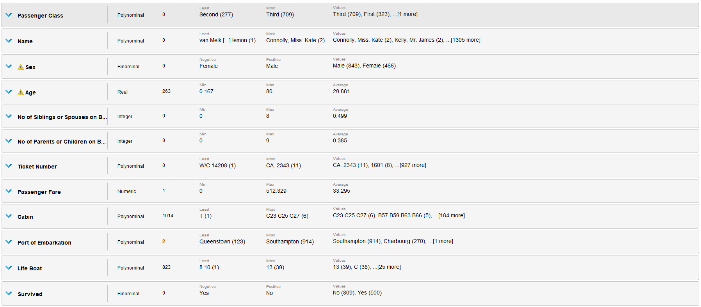Missing Values
Como podemos observar, tenemos valores faltantes tanto en la edad, en el precio del boleto,
la cabina, el puerto de embarcación y el bote salvavidas.
Para cada caso debemos analizar los atributos, la cantidad de valores faltante y la importancia
de los mismos para el problema.
Para la edad, se pueden reemplazar los valores faltantes por la media de la edad de los
pasajeros ya que estos son muy pocos en comparación con la cantidad de valores totales.
Para el precio del boleto, se puede quitar esta tupla ya que es un solo valor faltante, lo cual
no tendrá impacto en el modelo.
Para la cabina, quitaremos la columna entera, ya que los valores faltantes son demasiados y no
aportan información relevante para el problema,
ya que se puede inferir la cabina de un pasajero a partir de sus otras características como los
es la precio del boleto o la clase de pasajero.
Para el puerto de embarcación, tambien se puede quitar esta tupla ya que son solamente dos
valors faltantes.
Por último, para el bote salvavidas, se puede quitar esta columna ya que indica si un pasajero
se salvó o no, lo cual es lo mismo que el atributo objetivo Survived.
Para los modelos a considerar se utilizaron los algoritmos Disicion Tree, Naive Bayes y K-NN ya
que se trata de un problema de clasificación.
Para aplicar estos modelos primero preparamos la data, para ello, se trato con los atributos
como mencionado anteriormente, se seteo el atributo Name como id y el atributo objetivo como
label.
En cada cross validation de 10 folds y una seed igual en cada uno, se realizo el training del algoritmo, se aplico el modelo y se realizo una prueba de performance.
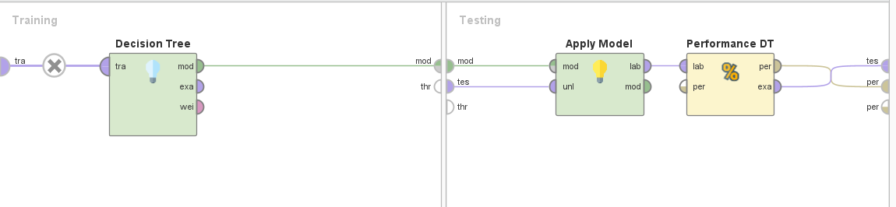 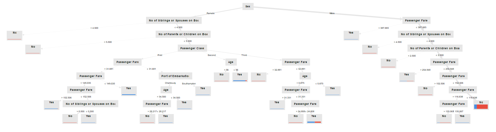 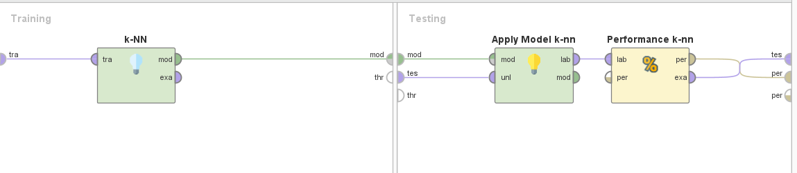 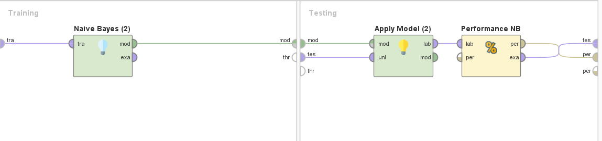En cuanto a los resultados, pudimos observar en las matrices de confusión que el algoritmo que mejor se comporto fue el de Decision Tree, con un accuracy de 80&, seguido por el algoritmo de Naive Bayes con un accuracy de 77% y por último el algoritmo de K-NN con un accuracy de 69%.
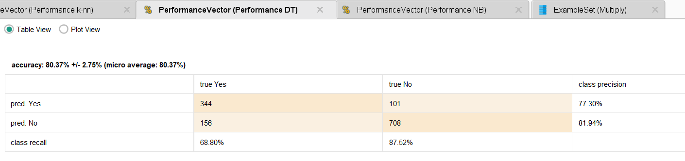 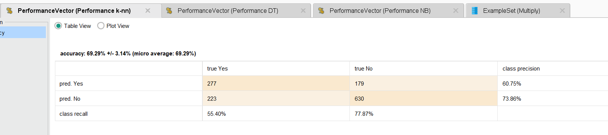 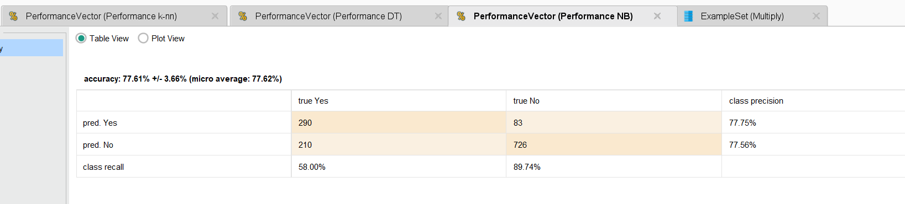
En conclusión, el análisis del conjunto de datos del Titanic revela información valiosa sobre
los factores que influyeron en la supervivencia de los pasajeros a bordo del famoso barco. A
través de la exploración de atributos como género, edad, clase de boleto y otros, hemos
identificado patrones significativos que arrojan luz sobre la tragedia del Titanic.
Este análisis demuestra la importancia del género como un factor crítico en la probabilidad de
supervivencia, con un sesgo evidente hacia la priorización de mujeres y niños. Además, la clase
de boleto se destaca como otro indicador clave de la probabilidad de supervivencia, mostrando
una clara correlación entre la posición socioeconómica y las tasas de supervivencia.
La edad también juega un papel importante, especialmente para los pasajeros más jóvenes y
mayores, lo que sugiere que las decisiones de evacuación podrían haber estado influenciadas por
la edad. Estos hallazgos son fundamentales para comprender las dinámicas sociales y de toma de
decisiones en situaciones de crisis.
En última instancia, este análisis del conjunto de datos del Titanic ilustra cómo el análisis de
datos puede proporcionar información valiosa y generar conocimientos que contribuyen a nuestra
comprensión de eventos históricos y a la toma de decisiones informadas en diversas áreas, desde
la ingeniería naval hasta la ciencia de datos.
Análisis profundo de los datos del Titanic con Python, aplicación de algoritmos y visualización
de los resultados.
Link
a Google Collab
Calculando algunas probabilidades condicionales:
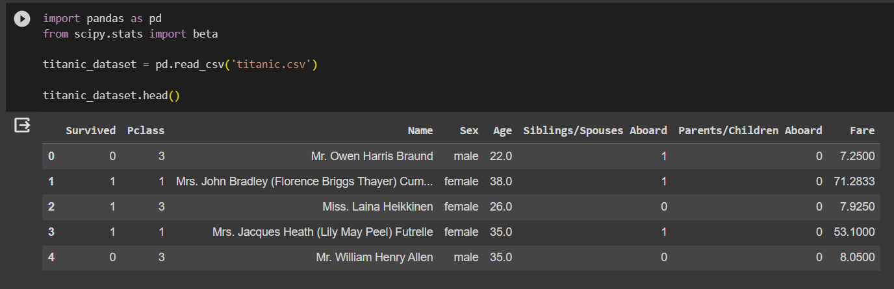 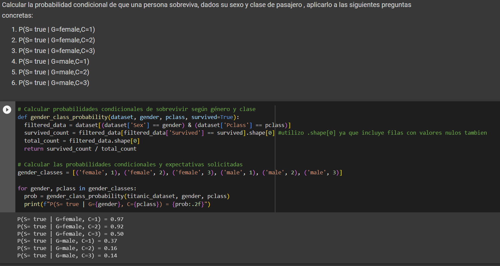 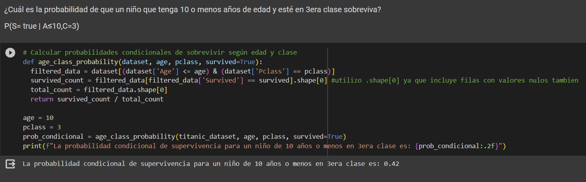